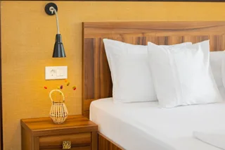
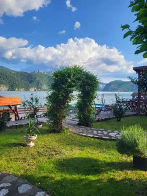
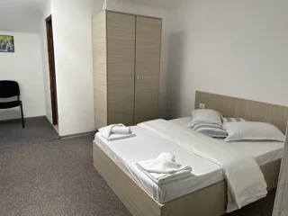

Locații de nuntă în Eșelnița
- locații în director
- 7
- cu cazare în registrul SITUR
- 2
- medie ponderată Google
- 4,4 / 5
- evaluări Google
- 3.451
Cum alegi o locație în Eșelnița
În Eșelnița poți începe comparația cu Conacul din Clisură (local pentru evenimente), Pensiunea MAI DANUBE (bed & breakfast), Casa Ana Serena (bed & breakfast). Aceste proprietăți apar în primele poziții când luăm în calcul împreună nota și numărul de evaluări Google. Salvează adresele care vă interesează pentru a le așeza apoi alături în fișa de comparare a ofertelor.
În fișele proprietăților poți compara dotări concrete la Conacul din Clisură (intrare accesibilă, parcare accesibilă, toaletă accesibilă), Pensiunea MAI DANUBE (terasă, ponton, cazare). Pentru oferta de nuntă, întreabă ce spații și servicii dintre cele prezentate intră în rezervarea privată pentru data voastră.
Dacă vin rude de departe, Pensiunea MAI DANUBE are o unitate de cazare asociată în registrul SITUR. Înregistrarea pentru Mai Danube cuprinde 30 de locuri de dormit în 15 spații de cazare. Întreabă câte camere pot fi păstrate pentru aceeași noapte înainte să trimiți invitaților detaliile de rezervare.
Dacă vrei să vezi două proprietăți în aceeași zi, poți continua de la Conacul din Clisură spre Pensiunea Oliver din Orșova. Punctele lor sunt la 3,6 km în linie dreaptă. Deschide traseul înainte să fixezi ora celei de-a doua vizite, mai ales dacă grupul se deplasează cu autocarul.
Locații pentru vizionare
Ordinea ține cont de nota Google și de numărul evaluărilor. Cum calculăm ordinea

Hartă ilustrată Eșelnița · Local pentru evenimente
Conacul din Clisură
Conac cu sală de evenimente în Eșelnița, Mehedinți: loc lăudat, dar recenzii recente critice despre ospătari și parcare. Ce să ceri în contract.
227195 Eșelnița
Fotografie a locației · Sursa fotografiei Eșelnița · Bed & Breakfast
Pensiunea MAI DANUBE
Pensiunea MAI DANUBE, Eșelnița. Pentru MAI DANUBE, zona Clisurii Dunării este unul dintre motivele invocate de oaspeți pentru ședere.
STR. DUNARII, NR.936, 225200 Eșelnița+40 722 991 178
Fotografie a locației · Sursa fotografiei Eșelnița · Bed & Breakfast
Casa Ana Serena
Pensiune cu ponton și piscină pe malul Dunării, la Eșelnița: curte plină de flori, nota 4,6, dar scări abrupte de verificat pentru vârstnici.
Strada Dunării 1068 B, 227195 Eșelnița+40 765 574 534
Fotografie a locației · Sursa fotografiei Eșelnița · Piscină interioară
Resort SPA Clisura Dunării
Resort SPA Clisura Dunării, Eșelnița. O familie cu doi copii își amintește mai ales atenția proprietarilor la Clisura Dunării.
DN57 98, 227195 Eșelnița+40 726 159 312
Fotografie a locației · Sursa fotografiei Eșelnița · Pensiune
Pensiunea Alegria
Pensiunea Alegria, comuna Eselnita jud. Mehedinti. La Alegria din Eșelnița, pontonul este detaliul care schimbă discuția despre o ceremonie.
str. Dunarii nr 964, 227195 comuna Eselnita jud. Mehedinti+40 747 935 122
Fotografie a locației · Sursa fotografiei Eșelnița · Pensiune
Pensiunea Doina
Pensiunea Doina, Eșelnița. Dacă una rămâne deschisă clienților obișnuiți, schimbă din timp traseul dintre ceremonie și aperitiv.
DN57 952, 227195 Eșelnița+40 722 506 476
Fotografie a locației · Sursa fotografiei Eșelnița · Bed & Breakfast
Pensiunea Steaua Dunarii Eselnita
Pensiunea Steaua Dunarii Eselnita, Eșelnița. Dacă aveți rude în ambele clădiri, cereți un tabel cu camerele și adresele de prezentare la sosire.
Strada Dunării, 227195 Eșelnița+40 722 207 918
Întrebări despre locațiile din Eșelnița
Unde pot dormi invitații în Eșelnița?
În registrul de cazare SITUR găsim Pensiunea MAI DANUBE (30 de locuri de cazare), Pensiunea Steaua Dunarii Eselnita (28 de locuri de cazare). Verifică ce camere sunt libere pentru noaptea evenimentului.
Ce proprietăți din Eșelnița au grădină sau terasă?
Pensiunea MAI DANUBE (terasă, ponton); Casa Ana Serena (terasă, ponton); Resort SPA Clisura Dunării (terasă, foișor). Cere administratorului condițiile de folosire pentru o petrecere privată.
Care locație din Eșelnița are cele mai multe evaluări Google?
Pensiunea Doina are 997 de evaluări în profilul Google folosit la documentare. Evaluările acoperă și alte experiențe la proprietate, inclusiv vizitele fără eveniment.
Unde apare o intrare accesibilă în Eșelnița?
Profilurile Google indică o intrare accesibilă la Conacul din Clisură, Resort SPA Clisura Dunării. Pentru o cununie în exterior, cere detalii despre traseul dintre intrare și zona cu scaune.
Vizionări în apropiere
- Orșova · 3 locații. Între Conacul din Clisură și Pensiunea Oliver sunt 3,6 km în linie dreaptă.
- Ilovița · 2 locații. Între Conacul din Clisură și Conacul Fruntea cu Ceru sunt 9,9 km în linie dreaptă.
- Balotești · 1 locație. Între Resort SPA Clisura Dunării și Pensiunea Happy sunt 21,5 km în linie dreaptă.